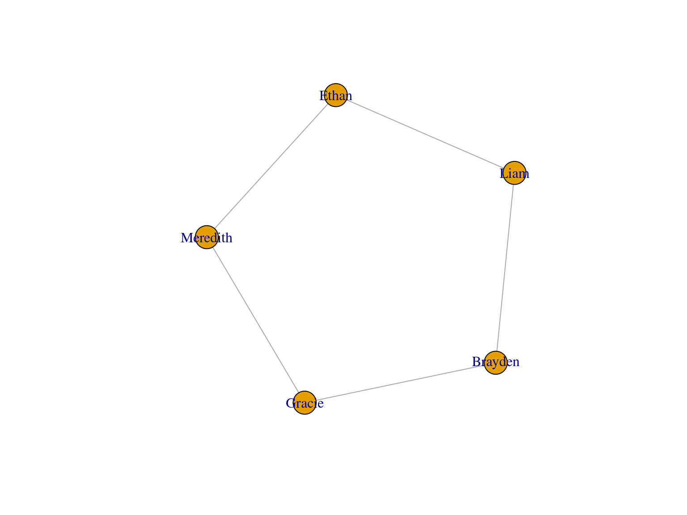
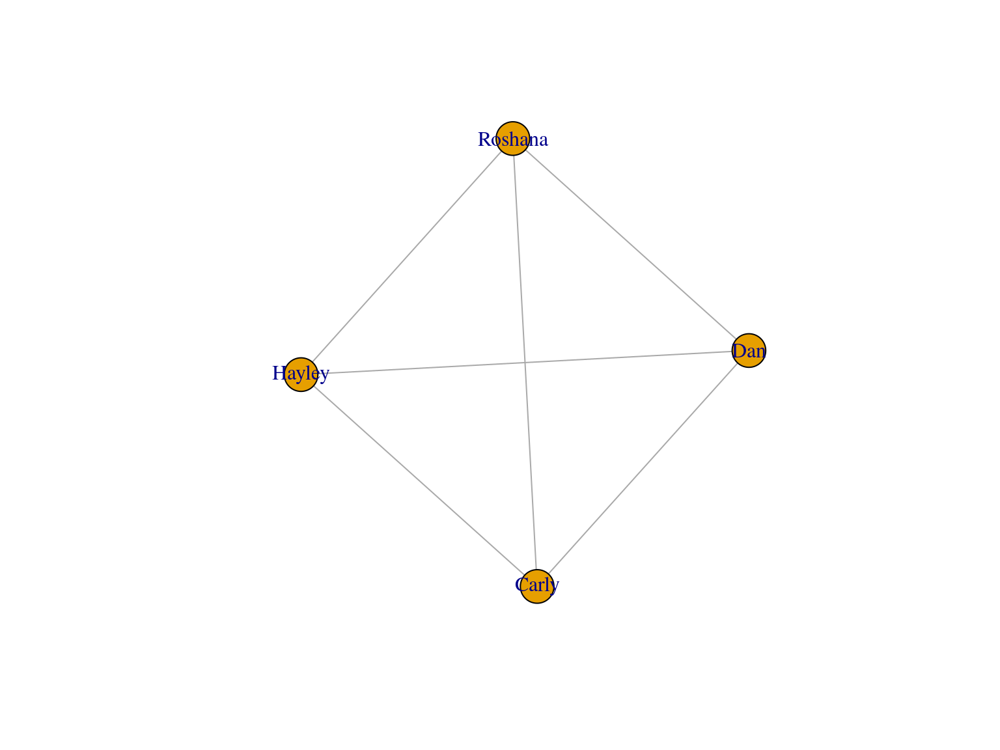

You are on a yacht in the middle of the ocean that is quickly sinking.
Your location is unclear because vital navigational and radio equipment have been damaged in the fire. Your best estimate is that you are many hundreds of miles from the nearest landfall.
You and your friends have managed to save 15 items, undamaged and intact after the fire. In addition, you have salvaged a four man rubber life craft and a box of matches. Rank the items correctly and you will survive until rescue comes.
You need to decide on a ranking as a group, but you can only communicate with a specific set of people, and you can only communicate one-on-one.
Start by making your own ranking of the items, and then discuss with your group how you want to rank them as a group.
I will choose one person randomly to be the group “leader”, and their final decision is the one that counts.
| Survival item | Coast guard ranking (step 3) | Coast guard reasoning |
|---|---|---|
| A sextant | 15 | Useless without the relevant tables and a chronometer |
| A shaving mirror | 1 | A mirror can reflect sun so others can see you |
| A mosquito netting | 14 | There are NO mosquitos in the middle of the Atlantic Ocean and the netting is useless for anything else |
| A 25L container of water | 3 | Vital to restore fluids lost through perspiration. 25 liters will supply water rations for your group for several days |
| A case of army rations | 4 | This is your basic food intake |
| Maps of the Atlantic Ocean | 13 | Worthless without navigation equipment |
| A floating seat cushion | 9 | Useful as a life preserver if someone fell overboard |
| A 10 litre can of oil / petrol mixture | 2 | The second most critical item for signaling. The mixture will float on water and can be ignited using the matches |
| A small transistor radio | 12 | You would be out of range of any radio station |
| 20 square feet of opaque plastic sheeting | 5 | Can be used to collect rainwater and shelter from the wind and waves |
| A can of shark repelient | 10 | To repel sharks, of course! |
| One bottle of 160 proof rum | 11 | Contains 80% alcohol, which means it can be used as an antiseptic for any injuries, otherwise of little value. Very dangerous if drunk, as it would cause the body to dehydrate, the opposite of what you need to survive |
| 15 feet of nylon rope | 8 | Could be used to lash people or equipment together to prevent being washed overboard. There are a variety of other uses, but none high on the list for survival |
| 2 boxes of chocolate bars | 6 | Your reserve food supply |
| An ocean fishing kit & pole | 7 | Ranked lower than the chocolate as there is no guarantee that you will catch any fish. The pole might be used as a tent pole |
You are a member of a space crew scheduled to rendezvous with a mother ship on the lighted surface of the moon. However, due to mechanical difficulties, your own ship was forced to land at a spot 200 miles from the rendezvous point.
During re-entry and landing, much of the equipment aboard was damaged and, since survival depends on reaching the mother ship, the most critical items available must be chosen for the 200-mile trip.
15 items are listed as being intact and undamaged after landing. Your task is to rank them in terms of their importance for your crew, to allow them to reach the rendezvous point. The ‘expert’ answers were compiled by a team of scientists and engineers at NASA.
| Item | NASA’s ranking | NASA’s reasoning |
|---|---|---|
| Box of matches | 15 | Completely worthless – there’s no oxygen on the Moon to sustain combustion |
| Food concentrate | 4 | Efficient means of supplying energy requirements |
| 15 metres of nylon rope | 6 | Useful in scaling Moon craters and tying injured together |
| Parachute silk | 8 | Protection from the Sun’s rays |
| Portable heating unit | 13 | Not needed unless on the dark side |
| Small fire extinguisher | 11 | Possible means of self-propulsion |
| One case of dehydrated milk | 12 | Bulkier duplication of food concentrate |
| Two 45-kg tanks of oxygen | 1 | Most pressing survival need (weight is not a factor since gravity is one-sixth of Earth’s – each tank would weigh only about 7.5 kg on the Moon) |
| Stellar map | 3 | Primary means of navigation – star patterns appear essentially identical on the Moon as on Earth |
| Self-inflating life raft | 9 | CO2 bottle in military raft may be used for propulsion |
| Magnetic compass | 14 | The magnetic field on the Moon is not polarized, so it’s worthless for navigation |
| 20 litres of water | 2 | Needed for replacement of tremendous liquid loss on the light side |
| Signal flares | 10 | Use as distress signal when the lunar base is sighted |
| First aid kit, including injection needle | 7 | Needles connected to vials of vitamins, medicines, etc. will fit special aperture in NASA spacesuit |
| Solar-powered FM receiver-transmitter | 5 | For communication with lunar base (but FM requires line-of-sight transmission and can only be used over short ranges) |
